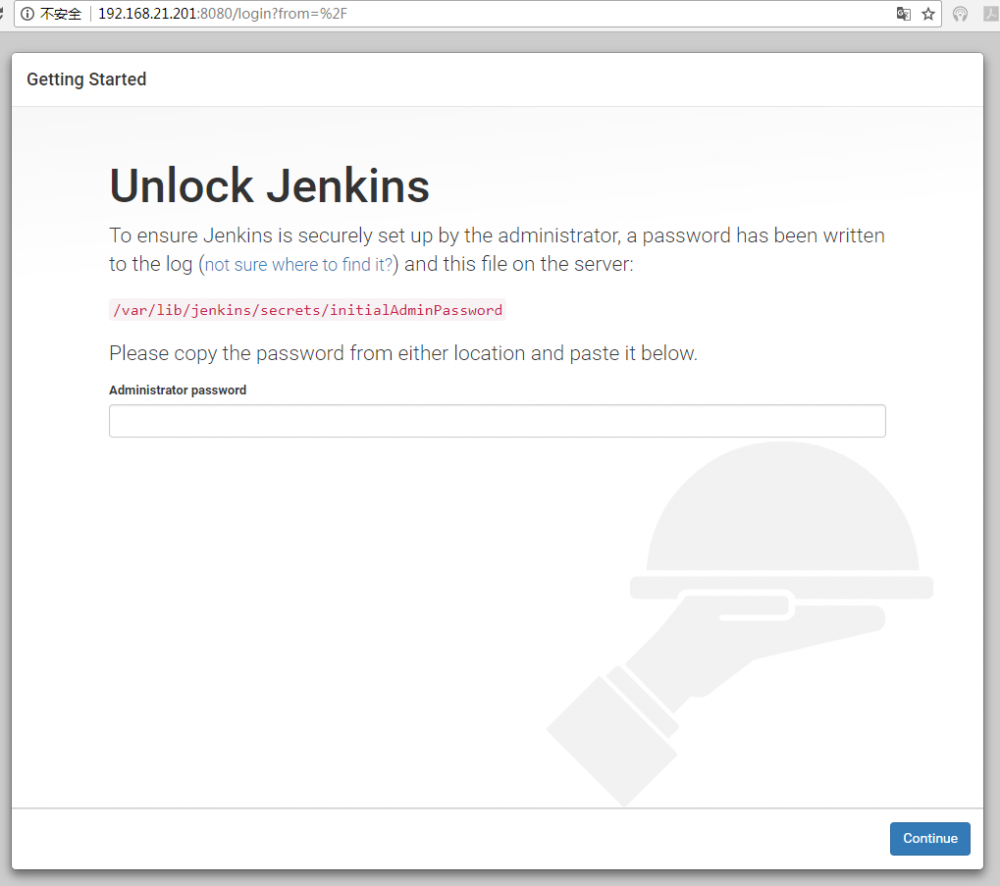

安装Jenkins¶
系统安装¶
CentOS-6.8-x86_64-minimal
下载地址:http://mirrors.aliyun.com/centos/6.8/isos/x86_64/CentOS-6.8-x86_64-minimal.iso ps:虚拟机安装用户root:Hexiaoyun128.
启用网卡信息¶
- 文件路径：
/etc/sysconfig/network-scripts/ifcfg-eth0
- 修改网卡信息，将ONBOOT=no改为ONBOOT=yes
DEVICE=eth0 HWADDR=08:00:27:B5:97:CE TYPE=Ethernet UUID=06beb802-ad1e-41da-bff2-a42d95e3aca2 ONBOOT=yes NM_CONTROLLED=yes BOOTPROTO=dhcp
maven配置¶
- 下载maven
wget https://mirrors.tuna.tsinghua.edu.cn/apache/maven/maven-3/3.5.0/binaries/apache-maven-3.5.0-bin.tar.gz
- 解压
tar zxvf apache-maven-3.5.0-bin.tar.gz mv apache-maven-3.5.0 /usr/local/
jdk配置¶
下载地址：
- 执行命令
- 在/.bashrc后面追加下面的内容:
更新
source .bashrc
git安装(已安装则忽略)¶
yum install git-core -y
安装Jenkins:¶
- Jenkins安装
- 修改jenkins配置信息:
在70行左右的candidates中增加下面的代码(前面安装jdk时的java路径)
/usr/local/jdk1.8.0_111/bin/java启动 jenkins
service jenkins start
- 开放8080 端口
vi /etc/sysconfig/iptables
添加下面的内容(放到开放端口22下面)
-A INPUT -m state --state NEW -m tcp -p tcp --dport 8080 -j ACCEPT
- 重启防火墙
/etc/init.d/iptables restart修改jenkins的用户
vi /etc/sysconfig/jenkins JENKINS_USER="root"
查看初始密码：¶
tail /var/lib/jenkins/secrets/initialAdminPassword
浏览器登录¶
http://192.168.21.201:8080/ 输入前面查看到的密码
安装推荐插件¶